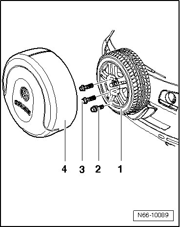
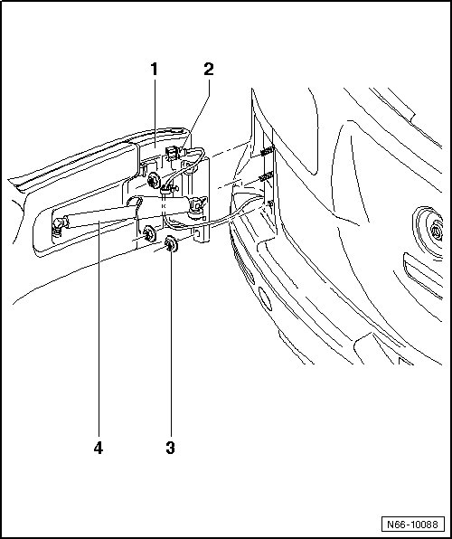
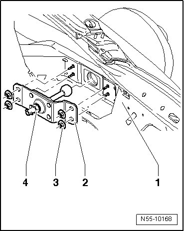
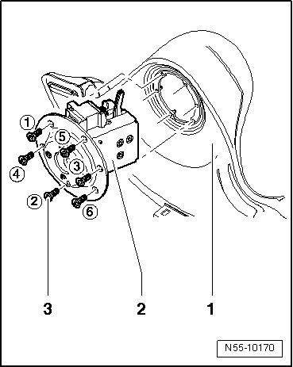
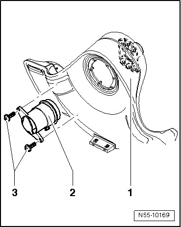

Rear Lid Spare Wheel Mount
Rear Lid Spare Wheel Mount
--> [ Spare Wheel ]
--> [ Bracket for Spare Wheel ]
--> [ Lock Carrier ]
--> [ Lock ]
--> [ Release ]
Spare Wheel
Removing
- Remove spare wheel cover - 4 - from spare wheel - 1 -.

- Remove bolts - 2 - and - 3 - and remove spare wheel - 1 - from bracket for spare wheel.
Installing
Installing the spare wheel - 1 - is the same in reverse order.
- Tightening specification: Bolts - 2 - and - 3 - 110 Nm
Bracket for Spare Wheel
Removing

- Open the bracket for spare wheel - 1 -.
- Remove spare wheel.
- Remove gas strut - 4 -, refer to --> [ Gas Strut ] Hood.
- Disconnect the connector - 2 -.
- Remove the nuts - 3 - and remove the spare wheel mount - 1 -.
Installing
To install, perform the steps used for removal in reverse order.
- Tightening specification: Hex nuts - 3 - 40 Nm.
Lock Carrier
Removing
- Remove the rear lid trim panel.

- Remove hex nuts - 3 - (quantity: 4) and remove lock carrier - 2 - from rear lid - 1 -.
Installing
Installation of lock carrier - 2 - is the same in reverse order.
- Tightening specification: Hex nut - 3 - 8 Nm
- By loosening the hex nut - 4 -, the lock carrier - 2 - can be adjusted to the spare wheel lock.
Lock
Removing
- Open the bracket for spare wheel - 1 -.

- Remove bolts - 3 - (quantity: 6) and pull the lock - 2 - out from the bracket for spare wheel - 1 -.
- Separate applicable electrical connectors.
Installing
CAUTION!
The specified bolting sequence 1 - 6 must be strictly maintained.
Installation of lock - 2 - is the same in reverse order.
- Lightly fasten bolts - 3 - in the specified bolt sequence - 1 - through - 6 -.
- Then tighten hex nuts - 3 -. Tightening specification: 8 Nm.
Release
Removing
- Remove lock.

- Remove bolts - 3 - and pull the release - 2 - out from the bracket for spare wheel - 1 -.
Installing
Installation of release - 2 - is the same in reverse order.
- Tightening specification: Bolts - 3 - 4.5 Nm